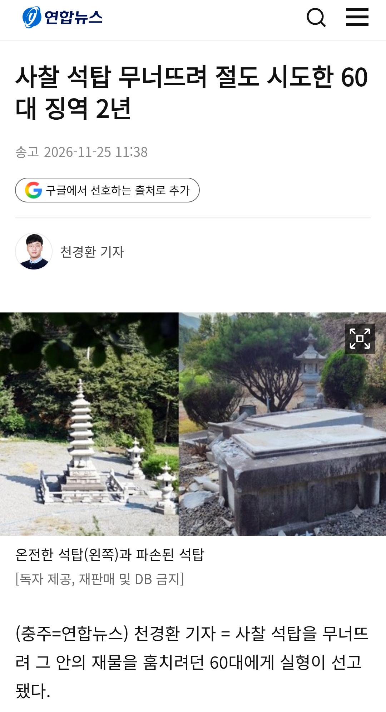

https://www.yna.co.kr/amp/view/AKR20261125088700064
청주지법 충주지원 형사2단독 김주현 부장판사는 25일 절도 미수 혐의로 구속기소 된 A(64)씨에게 징역 2년을 선고했다.
A씨는 4월 충주시 신니면의 한 사찰에서 7층짜리 석탑 내부에 보관된 금품을 훔치려다가 미수에 그친 혐의를 받는다.
과거 도굴 범죄 등으로 여러 차례 처벌 받은 전력이 있는 A씨는 석탑 내부에 금품을 넣는 불교 관습을 노리고 범행한 것으로 알려졌다.
저새낀 사형이 맞음
이번이 첨이 아니네